Attaching package: 'dplyr'The following objects are masked from 'package:stats':
filter, lagThe following objects are masked from 'package:base':
intersect, setdiff, setequal, union
Attaching package: 'dplyr'The following objects are masked from 'package:stats':
filter, lagThe following objects are masked from 'package:base':
intersect, setdiff, setequal, unionDu behöver följande paket:
ggplot2: Paket för att skapa grafik.
Dessutom används följande paket: tibble, dplyr
Detta kapitel handlar om att producera grafiska uppställningar i R-språket, med hjälp av paketet ggplot2. En av R:s stora styrkor är dess grafiska kapaciteter - du kan skapa nästan vadsomhelst för bilder med (jämförelsevis) enkla kodsnuttar!
I grund och botten finns grafiska uppställningar till för att lösa två problem:
Meningen med vetenskaplig grafik är alltså att undvika massiva tabeller med hundratals celler, och att förenkla svåra fenomen med lättbegripliga visuella hjälpmedel.
Det är värt att poängtera några ytterligare regler, som ofta glöms bort när forskaren skapar fina bilder och komplexa grafer:
Den tredje punkten kanske upprepar den första, men det är värt att upprepa: grafer ska förenkla förståelse, inte göra texten estetiskt vackrare! Använd alltså grafer med fri hand, men kom ihåg att de faktiskt måste gynna textförståelsen.
Den andra punkten är viktig, eftersom detta glöms ofta bort. Det sägs att en bild säger mer än tusen ord, men jag tycker att ordspråket bör modifieras för vetenskapligt bruk: en bild säger ingenting om du inte förklarar den. Du bör alltid faktiskt använda grafen i din text! Du kan tänka dig meningar så som:
I R finns det i princip två stora sätt att producera grafik: de inbyggda grafiska verktygen och paketet ggplot21. Vi kommer att lära oss det sedan nämnda, eftersom det är mer flexibelt. R:s inbyggda paket kan dock vara behändigt om du behöver snabbt granska ett förhållande (t.ex. lådgrafer för flera variabler), så tänk inte att du måste använda ggplot. Som alltid finns det flera sätt att lösa ett problem, och det bästa sättet är det du kan.
1 Siffran 2 står för version två. För att förenkla talar jag om ggplot i fortsättningen av texten, men syftar till den nyaste versionen vid skrivande stund.
ggplot följer något som kallas grafikens grammatik (eng. grammar of graphics). Detta är en designfilosofi som förenklar jämförelsen av olika grafiker och gör det lättare för dig att lära dig en ny grafisk funktion. Alla grafer i ggplot följer samma princip:
ggplot(data = mitt.data, # Obligatorisk: Skapar grafen.
aes(x = var1, y = var2,
...)
)
+ geom.funktion() # Obligatorisk: Ritar data.
+ coordinate.funktion() # Valfri: Koordinatsystemets inställningar.
+ facet.funktion() # Valfri: Delar grafen i subgrafer.
+ scale.funktion() # Valfri: Ställer in grafens skala.
+ theme.funktion() # Valfri: Ändrar grafens visuella tema.Du inleder en graf genom funktionen ggplot(). Beroende på vad du vill göra kallar du funktionen på olika sätt:
ggplot() skapar en helt tom graf. Du kan fylla den med olika element från olika dataset helt fritt. Använd när du använder många olika dataset och många olika grafiska element.ggplot(data) skapar en tom graf med ett färdigt dataset. Du kan lätt kalla olika kolumner från ditt dataset genom implicit hänvisning - t.ex. aes(x = var1) istället för aes(x = data$var1). Använd när du använder främst ett dataset men många olika grafiska element.ggplot(data, aes()) skapar en graf med de grafiska inställningarna givna i argumenten för aes(). Använd när du använder främst ett dataset och främst en grafisk uppställning.Syftet med olika sätt att generera grafen är alltså att ge dig den nivå av flexibilitet du behöver. I alla situationer kan du lägga till grafiska element fritt, men det är helt enkelt lättare ibland att börja med en tom graf. Se nedan för några exempelgrafer.
databas <- tibble(a = 1:1000, b = rnorm(1000))
ggplot() + ggtitle("Tom graf: ggplot()")
ggplot(data = databas) + ggtitle("Tom graf med färdigt data: ggplot(data)")
ggplot(data = databas, aes(x = a, y = b)) + ggtitle("Graf med data: ggplot(data, aes())")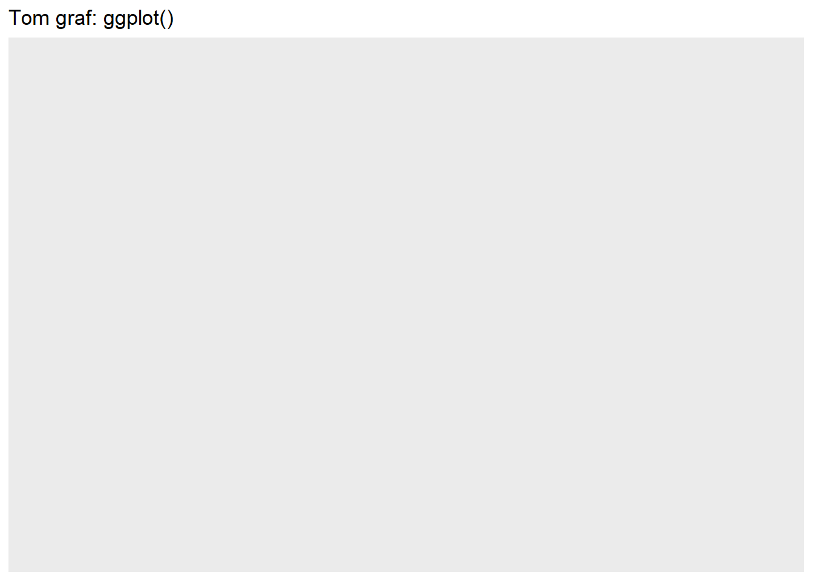
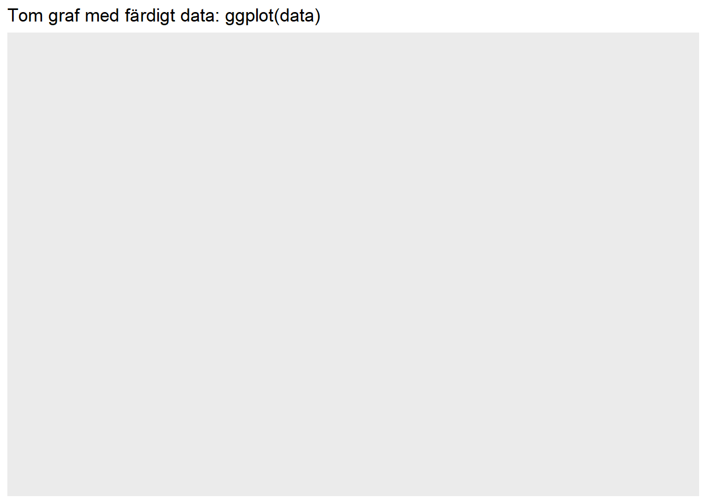
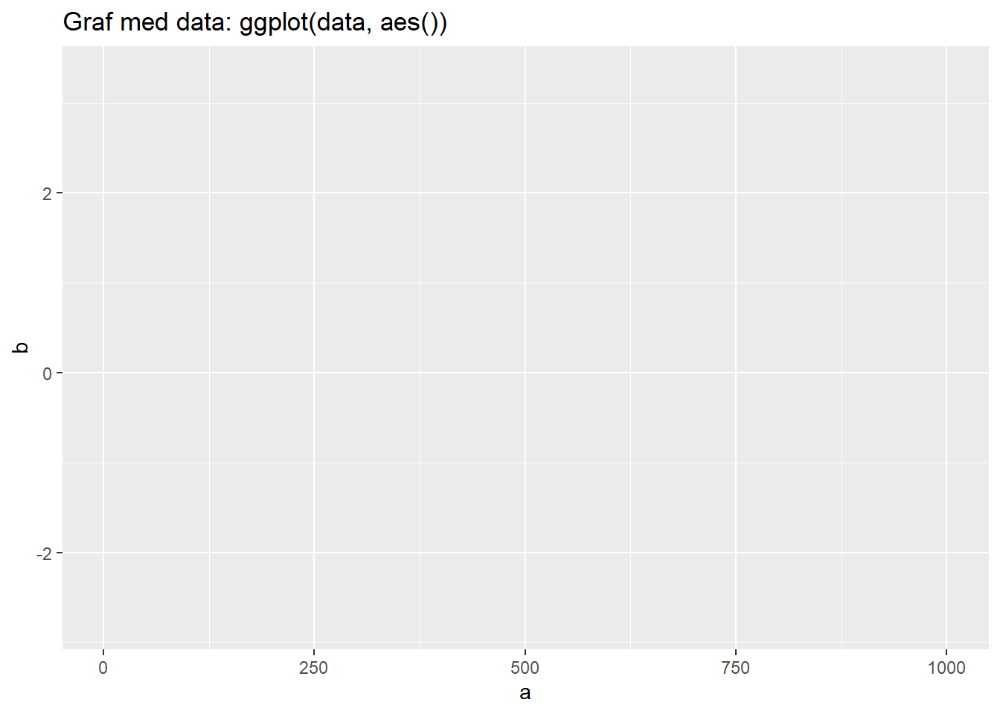
Som du säkert märkte ritade funktionerna inget data i graferna. Varför det, må du undra? Det är ganska enkelt: vi har berättat åt ggplot följande saker: “Hej ggplot, skapa en graf! Hej ggplot, skapa en graf med data från databas! Hej ggplot, skapa en graf med data från databas, och sätt kolumnen a på x-axeln och kolumnen b på y-axeln!
Men märk: ingenstans sade vi åt ggplot hur den ska rita upp vårt data! Grafiska element kallas geoms i ggplot-språket, och för att se ett grafiskt element, måste vi förstås skapa en geom. Följande grafer ger exempel på sådana geoms:
ggplot(data = databas) + geom_area(aes(y = a, x = b)) + ggtitle("geom_area()")
ggplot(data = databas) + geom_density(aes(x = b)) + ggtitle("geom_density()")
ggplot(data = databas) + geom_histogram(aes(x = a)) + ggtitle("geom_histogram()")`stat_bin()` using `bins = 30`. Pick better value with `binwidth`.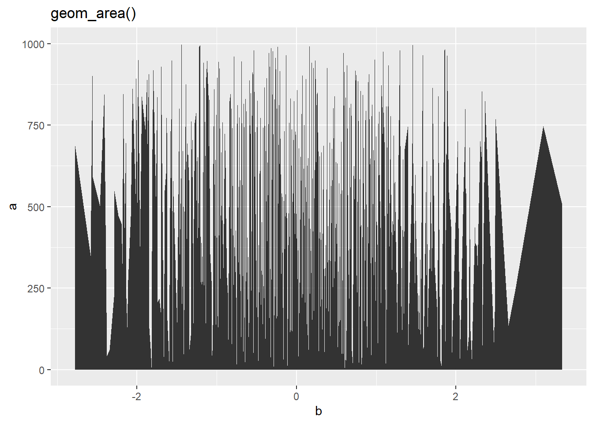
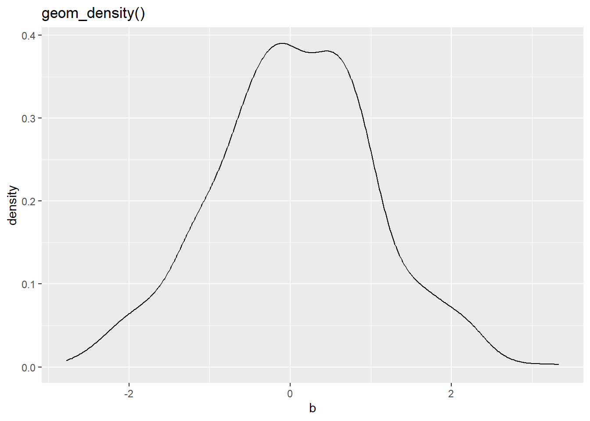
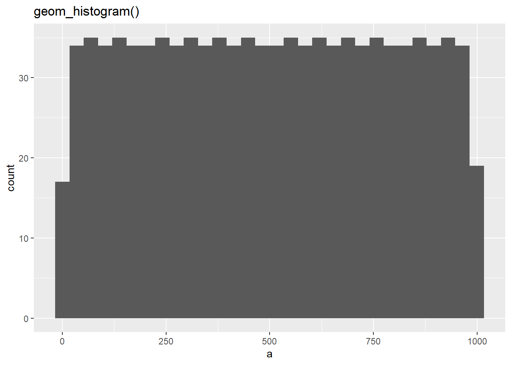
Några saker att poängtera: * Jag har flyttat aes() till geom-funktionerna istället för basfunktionen. Om du skulle lägga till flera geoms med denna metod, så måste du definiera estetiken för varje geom skiljt - eftersom det inte finns en estetik i basfunktionen som de andra funktionerna kan ärva. * De flesta grafer ser urusla ut, förutom geom_density(). Det finns många olika grafiska metoder, och de passar olika data olika bra.
Vi kan fortsätta med geom_density(). Grafen ser väldigt lika en normalfördelning, kanske vi vill exemplifiera detta genom att lägga en normalfördelningskurva ovanpå grafens data? Vi kan göra detta lätt, genom att lägga ett nytt element på grafen: geomen geom_function().
# Först återskapar jag den tidigare grafen i ett objekt:
graf <- ggplot(data = databas) + geom_density(aes(x = b))
# Sedan lägger jag till ett nytt element:
graf + geom_function(fun = dnorm,
args = list(sd = 1),
aes(x = b, colour = "red"),
show.legend = FALSE)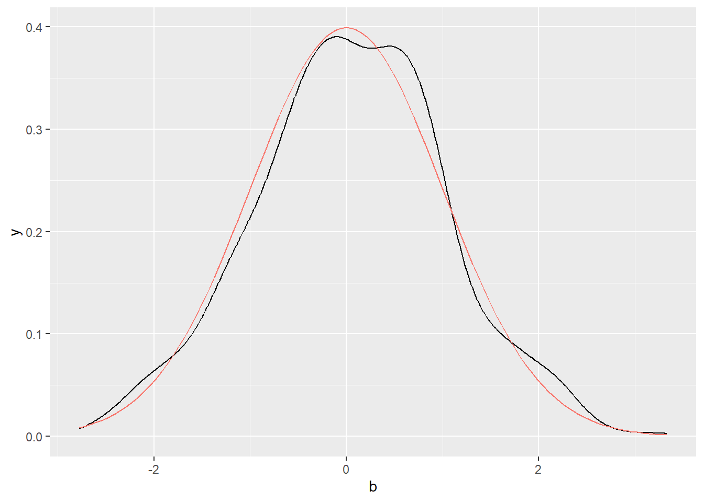
Funktionen tar många olika argument, så vi går igenom dem steg för steg.
Första argumentet är fun, alltså funktion2, och bestämmer vilken funktion som ska ritas. Jag bad R rita funktionen dnorm(), vilket genererar en densitetskurva av normalfördelningen. Detta är samma kurva som tidigare, men nu skapar den en perfekt normalfördelning.
2 Funktioner är roliga, enligt R och mig.
Andra argumentet är args, alltså argument. Detta kan vara lite svårtydigt: här listar jag argumenten jag vill ge åt funktionen som jag bestämde tidigare. Istället för att skriva dnorm(sd = 1) ger jag alltså funktionen som ett argument, fun = dnorm och funtionens argument som ett annat argument args = list(sd = 1). Argumenten måste ges som en lista, även om jag bara ger ett argument sd = 1.
Tredje argumentet är aes(), alltså estetiken. Här definierar jag först att jag vill ha x-axeln rita upp kolumnen b från datasetet dataset, i enlighet med vad vi definierade tidigare. Varför måste jag säga detta på nytt? Jo, eftersom estetiken inte har definierats i basfunktionen ggplot! Grafiska element ärver estetiken från deras basfunktioner, så om basfunktionen inte har en estetik, så får inte elementet heller automatiskt en estetik. Detta betyder också att vi kunde ge denna linje en annan estetik, om vi ville. Du kan testa vad detta gör i din egen kod.
Inom linjens estetik berättar jag också att jag vill ha en röd linje, med argumentet colour = "red"3. Vi kan också ge andra estetiker än färg: se hjälpfunktionen vignette("ggplot2-specs") för information på alla estetiska argument - det finns många!
3 ´ggplot´ är intelligent och kan skilja mellan engelsk och amerikansk stavning: color, col, colour ger alla samma resultat.
Det sista argumentet är show.legend = FALSE, och säger åt ggplot att inte rita en förklaringsruta. Du kan prova lämna bort detta för att se vad den ritar - rutan är inte nödvändig i denna graf.
Vi kan fortsätta stapla på geoms, hur många som helst! I något skede blir dock grafen obegriplig, så var sparsam. Skapa hellre flera grafer än att du tvingar en massa vetenskapliga argument in i en graf.
Ofta vill vi lägga till text på grafen. Detta kan vara en rubrik, underrubrik, alternativ text, text på koordinataxlarna, små textrutor här och där, och så vidare. ggplot sköter saken med ett antal olika funktioner. Dessa funktioner läggs till på samma sätt som alla andra element, genom att använda +-operatorn på baselementet.
Funktionen labs() ställer in de flesta standardtexter:
graf + labs(x = "X-axelns rubrik",
y = "Y-axelns rubrik",
tag = "Tag-texten",
title = "Grafens rubrik",
subtitle = "Grafens underrubrik",
caption = "Rubrik under grafen",
alt ="Alternativ text")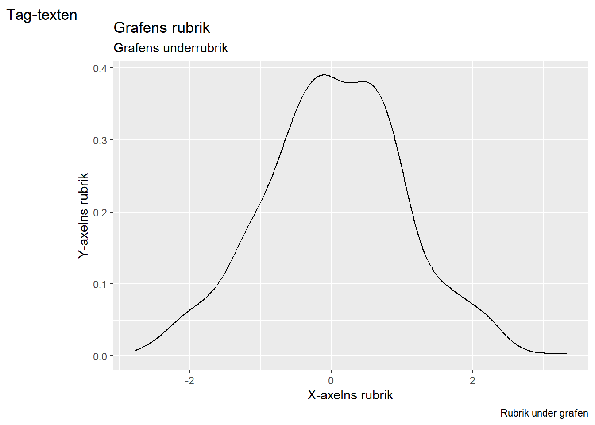
Argumenten torde vara självförklarliga. Ett undantag är alt, eller alternativa texten. Denna text syns i vissa specialfall, så som om grafen inte lyckas genereras (om du t.ex. skriver en HTML-bok, så som jag gör) eller om läsaren använder en skärmläsare. Du kan använda funktionen get_alt_text() för att hämta alternativa texten från en graf. Det är god form att skriva alternativ text för att göra dina grafer tillgängliga.
Ett problem med standardtexterna är att du har väldigt lite kontroll över hur de ser ut och var de placeras. Om du vill göra mer komplexa textmarkeringar finns det ett annat verktyg, annotate():
graf + annotate(geom = "text",
x = 2,
y = 0.3,
colour = "blue",
family = "serif",
fontface = "bold",
label = "Min text")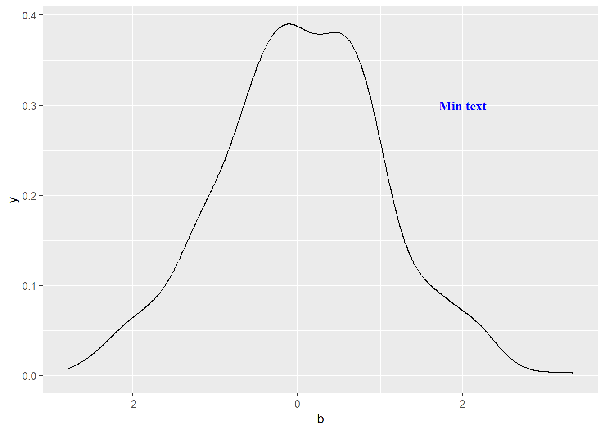
Funktionen tar tre(ish) obligatoriska argument och en rad valfria argument.
Det första obligatoriska argumentet är geom, som bestämmer hurudan geom du vill lägga på grafen. I textfall vill du använda “text”, men du kunde lägga in datapunkter, linjer, flerhörningar, bilder, och så vidare.
Det andra obligatoriska argumentet är, förstås, koordinaterna. Hur många koordinater är obligatoriskt beror på vilken geom du ritar. För text måste du definiera en x-koordinat och en y-koordinat, men om du t.ex. skulle rita en fyrhörning (med geom = "rect"), skulle du måste definiera dess fyra hörn.
Det sista obligatoriska argumentet är själva texten, label. Du måste ju skriva något på grafen för att skriva på grafen! Andra geoms än “text” har andra krav.
Ytterligare argument kan ges till annotate - dessa är estetiska argument som du vanligen skulle ge åt aes(). Jag använde colour för att göra texten blå, family för att byta fonten till en serif-font, samt fontface för att göra texten svärtad.
Ett bra trick att veta är att du kan också föra in resultat från datafunktioner inom texten. Detta gör du genom att ge label-argumentet funktionen paste(), vilken slår ihop R-objekt med vanlig text:
graf + annotate(geom = "text",
x = -2,
y = 0.3,
colour = "red",
label = paste('N =', count(databas)))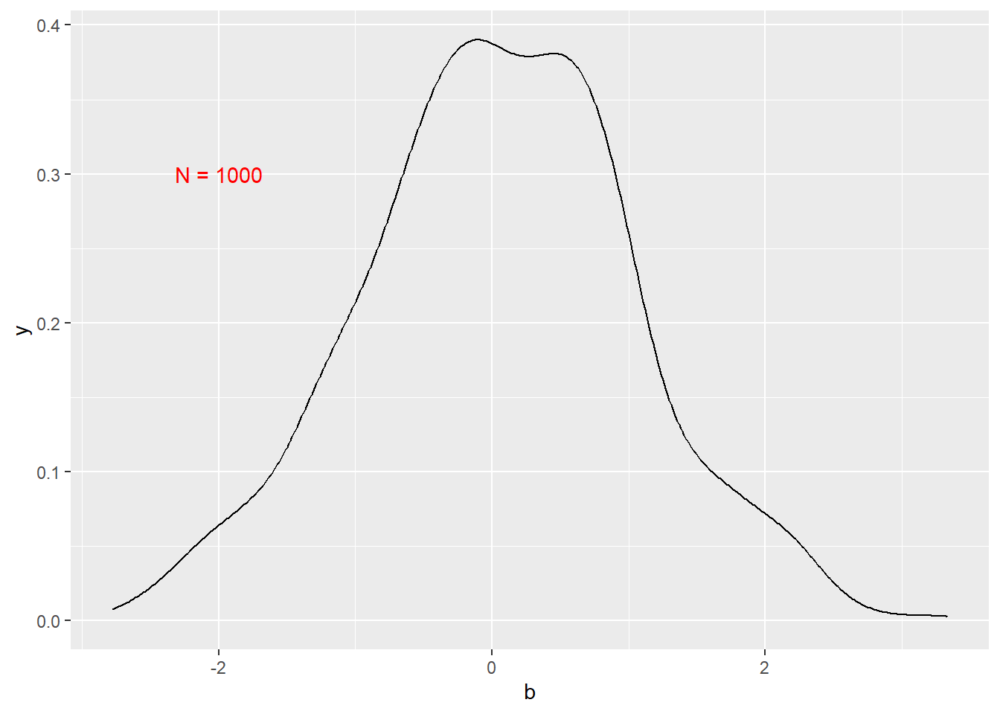
Funktionen annotate() är flexibel och kan lägga in vadsomhelst för former på grafen. För enbart text kan du även använda två enklare funktioner: geom_text() och geom_label(), så som nedan:
graf + geom_text(x = -2,
y = 0.25,
label = "geom_text()") +
geom_label(x = -2,
y = 0.2,
label = "geom_label()")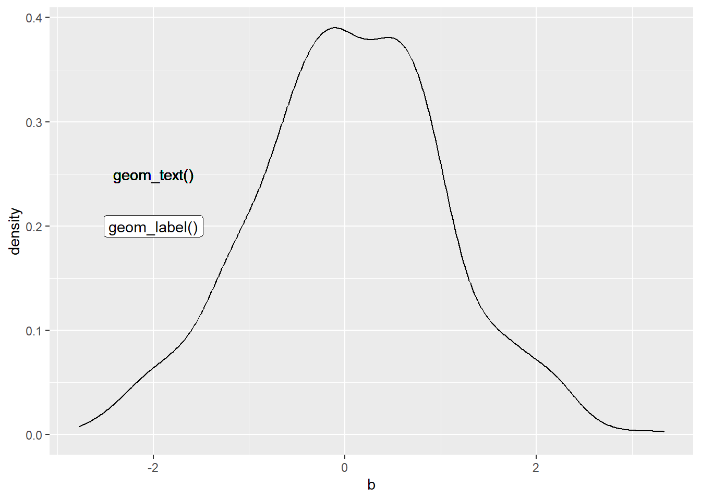
Som vanligt bör du ge x- och y-koordinater åt funktionerna, samt själva texten i argumentet label. Utöver dessa kan du ge ett stort antal olika estetiska argument, varav några viktiga är nedan:
colour bestämmer färgen.family bestämmer fonten (sans, serif eller mono).fontface bestämmer fonteffekten, t.ex. svärtning.check_overlap tar ett sanningsvärde och bestämmer huruvida texter får ligga på varandra inom grafen.vjust bestämmer justeringen av textenSe hjälpfunktionen ?geom_text eller ?geom_label för mera information om alternativen.